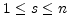

| CSIM User Manual |


 |
| CSIM User Manual |
|
If one simulates a network then one also wants to record the quantities of interest. In our introductory example we were interested in the membrane potential of the leaky-integrate and fire neuron. CSIM can record any field of any object by means of Recorder objects. The following code fragment shows how to set up a Recorder to record the membrane potential (Vm) of a LifNeuron object with handle n.
» rec = csim('create','Recorder');
» csim('connect',rec,n,'Vm');
Note that one Recorder object can record an arbitrary number of
fields from arbitrary objects.
After a network simulation via a command like
» csim('simulate',Tsim,InputSignal);
the recorded data of the the last simulation Recorder
rec can be obtained by the command
» R=csim('get',rec,'traces');
The exact structure of R for the recorder rec
depends on the value of the field
commonChannels of the Recorder object.
Reminder: The command
» R=csim('get',rec,'traces');
returns only the results of the last simulation. In the case of a
multi-stimulus simulation with stimulus array S of length n
this command returns only the result of the simulation with stimulus
S(n).
To get the results of all n simulations one has to use
» R=csim('simulate',Tsim,S);
In that case R contains the results of all n stimulations. R{r}(s).channel contains the recorded data of the r-th recorder during the s-th simulation ( ). R{r}(s).channel is of the format as described in Section 3.2.1.